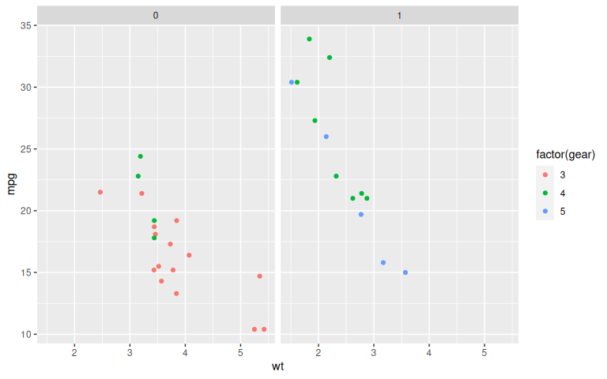
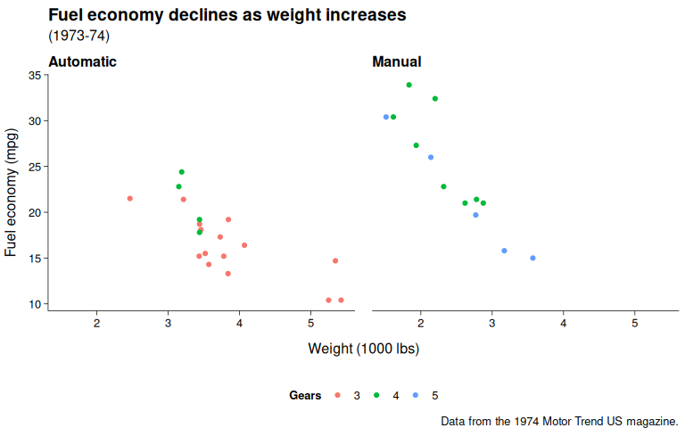
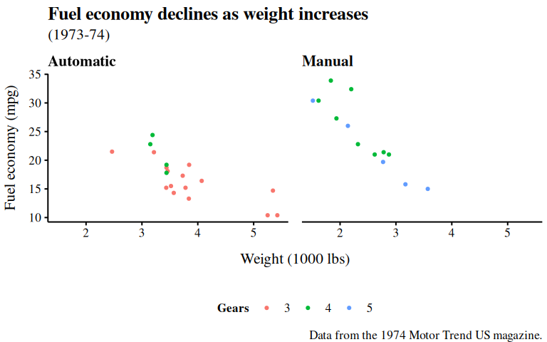

ggplot2 theme for scientific publications
Zacharias Steinmetz
2023-09-11
Source:vignettes/theme_publish.Rmd
theme_publish.RmdFirst, load ggplot2 alongside envalysis.
The following code chunk plots the ggplot2
mtcars sample data set with the default
ggplot2 theme.
data("mtcars")
p <- ggplot(mtcars) +
geom_point(aes(x = wt, y = mpg, color = factor(gear))) +
labs(
title = "Fuel economy declines as weight increases",
subtitle = "(1973-74)",
caption = "Data from the 1974 Motor Trend US magazine.",
x = "Weight (1000 lbs)",
y = "Fuel economy (mpg)",
colour = "Gears"
) +
facet_wrap( ~ am, labeller = labeller(am = c("0" = "Automatic",
"1" = "Manual")))
p
Adding theme_publish() applies the custom theme.
p + theme_publish()
theme_publish() allows for changing the base font face,
font size, and line widths. More arguments may be passed to
ggplot2’s theme_bw()
p + theme_publish(base_size = 16, base_family = "Times", base_linewidth = 0.7)